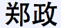

Contact
Zheng Zheng
University of Utah
Dept. of Physics & Astronomy
E2108 Stewart Building
270 S 1400 E
Salt Lake City, UT 84112

Travel Schedule
University of Utah
Dept. of Physics & Astronomy
E2108 Stewart Building
270 S 1400 E
Salt Lake City, UT 84112
Travel Schedule
Press Release: Discovery points to origin of mysterious ultraviolet radiation
Press Release: Nearest Bright 'Hypervelocity Star' Found
Utah AstroLunch HEAP Seminar
Press Release: Nearest Bright 'Hypervelocity Star' Found
Utah AstroLunch HEAP Seminar
Welcome to Zheng Zheng's Homepage!
Hi, this is Zheng Zheng*, professor in Physics and Astronomy at the University of Utah.
My main research areas are in cosmology, large-scale structure, galaxy formation and evolution, and Lyman-alpha radiative transfer. I also have broad interests in other fields of astrophysics.
*My first and last name have the same pronunciation, but they are different characters in Chinese: 
Copyright © 2009 Zheng Zheng.